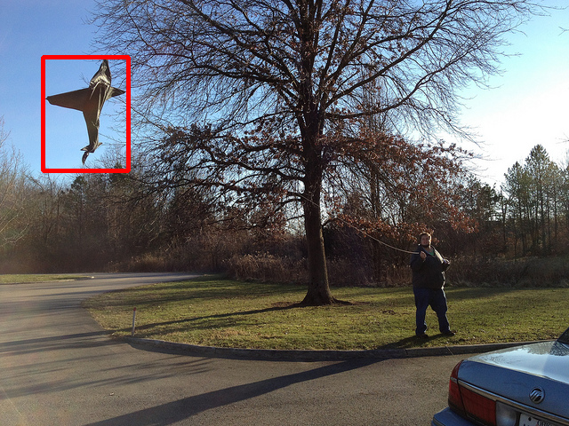
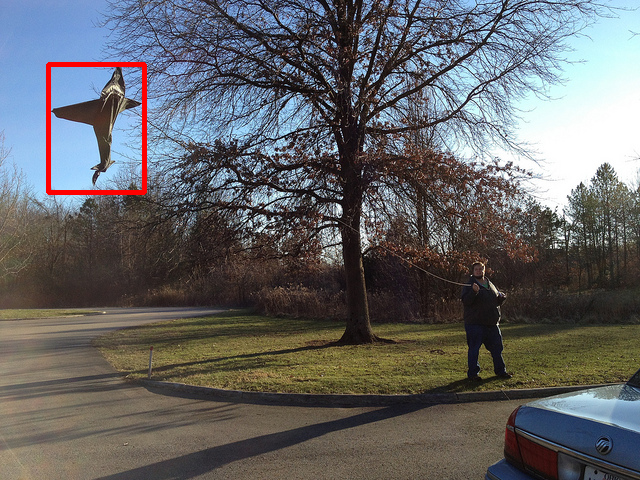

download
resume
Short Bio
Oriane Siméoni is a Research Scientist in the research team valeo.ai, working on computer vision issues with a focus on methods using little to no human-made annotation. Before joining valeo.ai, she did her PhD at Inria Rennes--Bretagne Atlantique under the supervision of Yannis Avrithis and Guillaume Gravier. During her PhD, she performed two internships at Twitter and Google and visited the Visual Recognition Group (CVUT).


 
